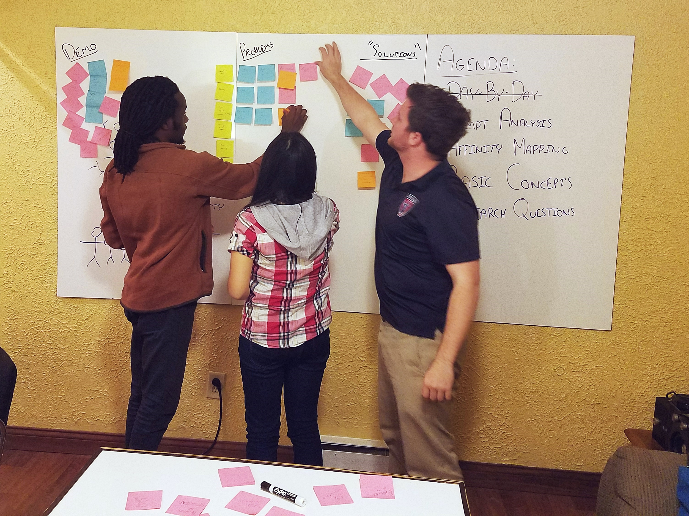

User Interview, Ideation, Sketching, Wireframing, Documentation
Role
Background
Challenge
We were given the prompt based on CHI 2017 Design Competition: Leveling the Playing Field to identify a design target that's often excluded or left behind and create a design intervention accordingly.
Picking a User Group: Student Veterans
The foremost difficulty of this project was for us to pick a user group in a very limited time frame. To efficiently acoomplish the task while ensuring everyone on the team was on the same page, we adopted the affinity diagram method after having an in-depth discussion about the prompt.

How we did affinity diagram
We each wrote down our understanding, intepretation, or questions toward the challenge, and potential user groups on a stack of post-it-notes. Later organized them into different categories: demographic groups, problems, questions (about the prompt) and solutions.

Why Student Veterans
Some of the user groups other than student veterans that we were initially interested were foster child, single-mother, and mentally disordered. However, with what the CHI brief emphasized: "where ongoing access and engagement is possible" in mind, we came to the decision of addressing student veterans with our design.
Problem
For student veterans, it is very difficult to connect within a community after transitioning from active duty to civilian student.
Research
To better understand student veterans
We spoke with several student veterans at Indiana University Students face-to-face and two student veterans ar other university on the phone to get insights on following issues:
- What's some difficulties they faced while finding school?
- What's some difficulties they faced first coming to [current university]?
- What are some of the veteran services offering by the university? Are they helpful? Anything that they wish to have?
- What are some differences between them and normal students in terms of needs and problems?
To better understand current veteran services
We talked to John Summerlot, Director of Veteran Support Services (VSS) at Indiana University, and Mary Elftman, Veteran Services Officer at the Monroe County Veterans Affairs. Our goal for these conversations were to identify where we can intervene and to seek for potential support. Some of the questions we asked are:
- What are some veteran services that's currently being offered?
- What are some limitation they faced when assisting veterans?
- Is there any problem they observed yet being addressed under current system?
To better understand the problem on a larger scale
We went through information provided by U.S. Department of Veterans Affairs and referred to several reports and research articles* to gain deeper knowledge on veterans as a whole. This also validated our assumptions that the problems we found through previous conversations were not specific to Indiana University but a serious issue on a national level.
Insight
From our research, we gathered following key insights on student veterans:
- Student veterans need to be connected with university, each other, community in order to be more successful.
- Currently, there are little to no veteran network at the university beyond Veteran Support Services on campus and miscellany self-organized Facebook groups.
- Resources are vital to the transistion period. However, most veterans are unaware of what is provided for them by the university of local veteran affairs.
Design Concepts
Based on the given prompt and our insights from research, we came down to some main concepts with our design intervention for student veterans.
Being Connected
Following the affinity diagram and research, we came to some initial conclusion that among all the issues mentioned by the veterans, we would like to focus on faciliating them being connected to each other and the university. We believed being connected is the very basic step to solve other problems such as academic or mental issues. Without the student veterans being connected to his peers and the university, it is nearly impossible for any other resources and services to reach them.
Centralized Information
We aimed to provide a centralized location for all the information that is specifically for veterans. In other words, everything in the portal is specific to student veterans, and everything for student veterans are in one place.
Our portal would consist of the student veteran's profile and four sections: Network, Resources, Map, and Events. More detailed explaination for each section would be presented along with our final solution below.
Not Another Facebook
We made the decision early on that we did not want to build another social media that pushes interactions to happen. On the contrary, we would like to provide opportunities of connection for those who are in need of. Our later conversations with the student veterans of IU also supported this idea.
Usability Test
After ideation and sketching, we tested our hi-fidelity prototype made in Axure with four student veterans at IU. The goal is to see if any part of interface may cause confusion to the users, and if they find our design addresing problems they had experienced.
How We Tested
We first asked
Issues Found
Solution: CVP
Below is our solution, Campus Veterans Portal, a centralized portal with information specifically for student veterans, with the veteran's profile showing on the top, and below are the four sections: Network, Resources, Map, and Events.
1: Profile

The profile gives veterans the opportunity to identify themselves with school and military related information. It will be connected with the university's system, showing one's basic information and veteran-specific information. The veterans would have control over what information they would like to make public to other veterans on campus.
2: Network

Network provides veterans the opportunity to connect with other veterans on campus and they can filter to find other veterans that served in the same branch as well as veterans who are faculty, alumni, and students.
3: Resources

Resources contains veteran specific information and all of the info provided is directed at the veterans. This section is designed in reponse of the problem that the veterans may not aware of the what or how they can access the resources and benefits provided at the local, regional, and national level.
4: Map
It was mentioned by the director of VSS that knowing about military related locations helps provide connections between the university, the veterans, and their military background. Besides, when a veteran is new to a campus, he/she may not know exactly where everything is. This Map section would serve as an aid to the Resources section that provide veteran-specific location information.
5: Events

Events is where it takes the network a step forward to connect veterans with opportunities they might not be aware of otherwise. It connects with the Network, and the veteran can see who is going to the events from the connections that was made.